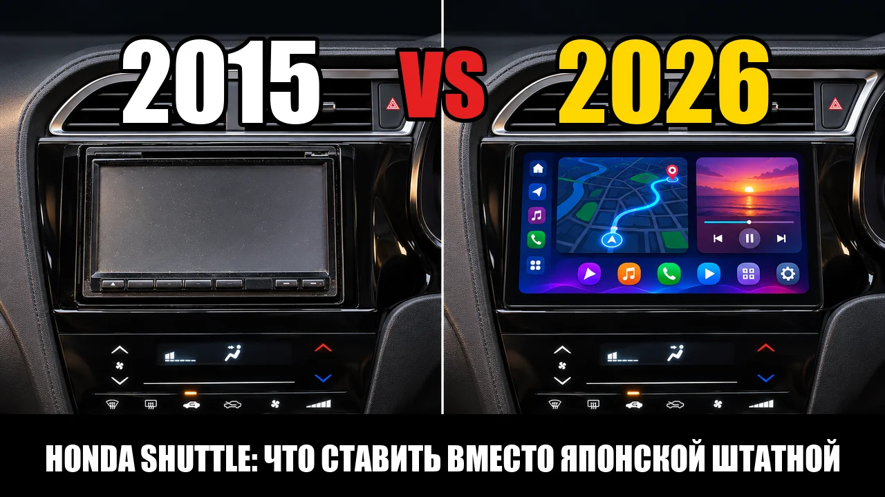
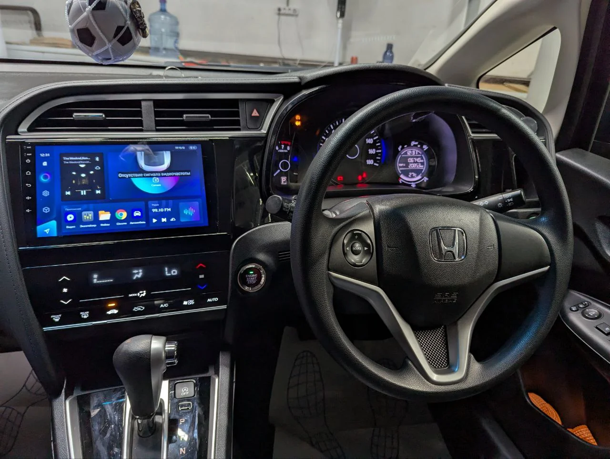
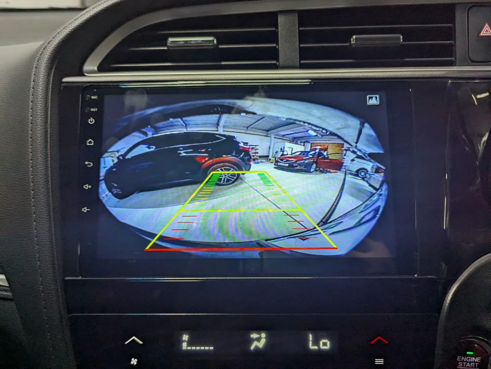

Лучшая магнитола для Хонда Шаттл: что ставить вместо японской штатной

Honda Shuttle возит семью и багаж, а магнитола в нём до сих пор говорит по-японски.
Меню иероглифами, карта Японии, радио, которое не ловит часть новосибирских станций. Навигатор в итоге живёт в телефоне, а телефон – в руке на светофоре.

Коротко: что ставить на Shuttle
Лучшее решение по мультимедиа для Shuttle сегодня – Android-магнитола Teyes в штатную рамку. Экран встаёт на место японского блока, сенсорная панель климата остаётся под ним, штатную камеру заднего вида можно сохранить – мы так и сделали на машине с фото.
В каталоге TEYES Sibir под Shuttle 2015–2020 стоят Teyes CC3L за 28 800 ₽ и CC4 Pro за 62 790 ₽ – цены на сайте 18.11.2026, при оплате наличными, установка отдельно, от 4 500 ₽.
Какой у вас Shuttle
Shuttle продавали в Японии с 15 мая 2015 года, выпуск закончили в августе 2022-го. Машину делали для японского рынка, поэтому все Shuttle у нас – праворульные, привезённые из Японии.
- GK8 и GK9 – бензин 1.5, передний и полный привод.
- GP7 и GP8 – гибрид 1.5 i-DCD, передний и полный привод.
- Версии 2015 года: G, HYBRID, HYBRID X, HYBRID Z.
- Май 2019-го – обновление: новые передок и корма, другие сиденья, правки в салоне.
До весны 2015 года похожий универсал назывался Fit Shuttle – у него другая панель, и рамка от него на Shuttle не подойдёт.
Что стояло в машине с завода
Honda продавала Shuttle без магнитолы в базе: даже крышку на пустое место под неё ставил дилер за доплату. Динамиков в базовой машине два.
Заводская опция – навигация Honda Internavi. Сенсорный экран, как у смартфона, по дизайну собран в одно целое с панелью климата. Вторая опция – пакет для установки навигации. С любой из них динамиков становится четыре.
Дилерские системы. Без заводской опции машину комплектовал дилер: у Honda для этого есть фирменные магнитолы и навигация Gathers от Honda Access.
С сентября 2017 года Honda Sensing стала штатной на всех версиях, а навигация научилась CarPlay и Android Auto.
Что раздражает владельцев в 2026 году
Японское радио. FM в Японии – от 76 до 95 МГц, наш диапазон – до 108 МГц. Всё, что выше 95, японский приёмник не ловит.
Японские карты и меню. Навигация ведёт по Японии, подсказки и настройки – на японском.
Два динамика. Если машина пришла в простой версии без навигации, динамиков в ней всего два.
Телефон вместо навигатора. Отсюда держатель на панели, провод через консоль и звонки через динамик телефона.
CarPlay в японской навигации. Если у вашей машины фирменная навигация после сентября 2017 года, телефон к ней подключится. Меню, радио и встроенные карты при этом останутся японскими.
Три пути и какой выбрать
Русифицировать штатный блок. Если перевод для вашей системы есть, меню станет русским. Карты останутся японскими, а радио – в японском диапазоне.
Ездить с телефоном. Бесплатно, но держатель и провод остаются с вами.
Поставить Android-магнитолу Teyes в штатную рамку. Наши карты и станции, интернет по SIM-карте, CarPlay и Android Auto на понятном меню. Этот путь закрывает все пункты выше.
Какую Teyes ставить на Shuttle
Teyes CC3L – память 4/32 ГБ, экран IPS 1280×720, 8 ядер, слот под SIM-карту с 4G, Wi-Fi, процессор звука DSP, CarPlay и Android Auto, GPS и ГЛОНАСС, вход камеры AHD 1080p. 28 800 ₽ на 18.11.2026. Её мы поставили на Shuttle с фото.
Teyes CC4 Pro для правого руля – память 8/128 ГБ, экран QLED 2000×1200. 62 790 ₽, версия 12/256 ГБ – 64 850 ₽. Рамка и проводка к машине в эту цену не входят.
Обе карточки подписаны «2015–2020». Если ваш Shuttle 2021–2022 года, рамку подберём по фото центральной панели.
Что останется от штатного
- Климат. Сенсорная панель под экраном работает со своих кнопок – на фото выше.
- Камера заднего вида. На нашей работе штатную камеру сохранили: при включении задней передачи картинка выходит на большой экран.
- Кнопки на руле. Если они у вас есть, магнитола понимает короткое и долгое нажатие.
- Звук. У CC3L эквалайзер на 36 полос и процессор DSP: даже два штатных динамика настроите под себя. Выходы RCA на 5.1 оставляют место для усилителя и сабвуфера, если решите добавить их позже.
- Отделка салона. Экран встаёт в штатное место, панель не пилят.

Наши работы по Shuttle
Honda Shuttle, Teyes CC3L и штатная камера. Владелец приехал обновить японскую мультимедиа. Поставили CC3L, камеру адаптировали к новой магнитоле, в машине появились Яндекс Навигатор, 2ГИС, музыка и онлайн-радио. Смотреть работу на сайте
Все варианты для Shuttle – замена магнитолы, русификация, камеры – собраны на одной странице: магнитола и мультимедиа Honda Shuttle. Комплект CC3L с ценой – в каталоге, старшая CC4 Pro для правого руля – там же.
При покупке мультимедиа Teyes – камера заднего вида в подарок или скидка 1 000 ₽ на широкоугольную. Назовите менеджеру промокод САЙТ.
TEYES Sibir, официальный установочный центр Teyes в Новосибирске: Сухарная 35 корпус 13, пн–пт с 11:00 до 19:00.